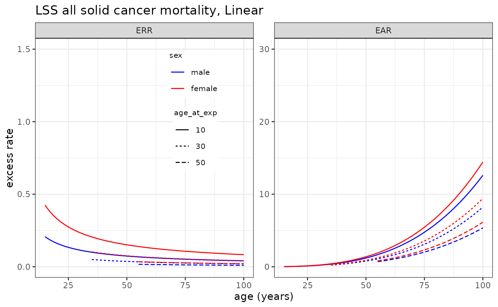
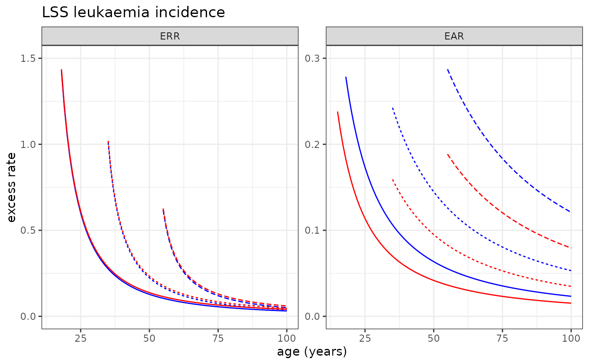

Plotting risk models
plot_riskmodel.Rdplot_riskmodel() plots the excess relative and absolute rates of cancer incidence or mortality rates based on the risk models derived from the Life Span Study for a given dose. The scenario is currently fixed for ages at exposure of 10, 30 and 50 years. Age specific risks are plotted for both ERR and EAR separately for both male and female.
Arguments
- rm
a list object which contains the risk model information specified in the format described in Details.
- doseGy
a value that specifies the radiation dose in Gy or Sv (default=0.1).
- maxage
maximum age in years (default=100)
- ymax
a value that specifies the maximum value for y-axis.
- leg_pos
a vector that specifies the legend x-y position ((1,1) for the top-right; default="none" for no-legend).
- EAR_PER
an integer value for the excess absolute rate denominator (default=10^4).
- add
a vector of values to be added to female's ERR and EAR values (to avoid completely overlapping sex-specific values when the risk is not modified by sex).
- sex
a character string which specifies whether the plot contains "both" sexes, "male" or "female" only.
- x_lab
x-axis label (default="age (years)" ).
- y_lab
y-axis label (default="excess rate").
- title
a character string that specifies the title of the plot (default="", i.e., no title).
Details
The risk model can be specified by the list object provided in CanEpiRisk package; for example LSS_mortality$allsolid$L for LSS all solid cancer mortality linear model, LSS_incidence$allsolid$LQ for LSS all solid cancer incidence linear-quadratic model, LSS_mortality$leukaemia$LQ for LSS leukaemia mortality linear-quadratic model, LSS_incidence$thyroid$L for LSS thyroid cancer incidence linear model.
Examples
# The following examples use default data provided in CanEpiRisk package
# for riskmodels (LSS_mortality and LSS_incidence) derived from Life Span Study
# and baseline mortality and incidence rates for WHO global regions (Mortality and Incidence)
# Example 1: LSS all solid cancer mortality risk model
plot_riskmodel( rm=LSS_mortality$allsolid$L, title="LSS all solid cancer mortality, Linear", leg_pos=c(0.4, 0.95) )

# Example 2: LSS Leukaemia incidence risk model
plot_riskmodel( rm=LSS_incidence$leukaemia$LQ, title="LSS leukaemia incidence", ymax=c(1.5, .3), add=c(0.01,0) )
#> Warning: Removed 6 rows containing missing values or values outside the scale range
#> (`geom_line()`).
